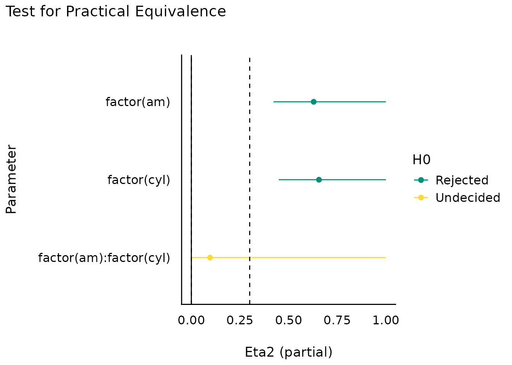

This vignette can be referred to by citing the package:
citation("see")
#> To cite package 'see' in publications use:
#>
#> Lüdecke et al., (2021). see: An R Package for Visualizing Statistical
#> Models. Journal of Open Source Software, 6(64), 3393.
#> https://doi.org/10.21105/joss.03393
#>
#> A BibTeX entry for LaTeX users is
#>
#> @Article{,
#> title = {{see}: An {R} Package for Visualizing Statistical Models},
#> author = {Daniel Lüdecke and Indrajeet Patil and Mattan S. Ben-Shachar and Brenton M. Wiernik and Philip Waggoner and Dominique Makowski},
#> journal = {Journal of Open Source Software},
#> year = {2021},
#> volume = {6},
#> number = {64},
#> pages = {3393},
#> doi = {10.21105/joss.03393},
#> }Introduction
The effectsize package in easystats provides utilities to work with indices of effect size and standardized parameters, allowing computation and conversion of indices such as Cohen’s d, r, odds-ratios, etc.
For more, see: https://easystats.github.io/effectsize/


Equivalence tests
(related function documentation)
aov(mpg ~ factor(am) * factor(cyl), data = mtcars) %>%
eta_squared() %>%
equivalence_test(range = 0.3) %>%
plot()